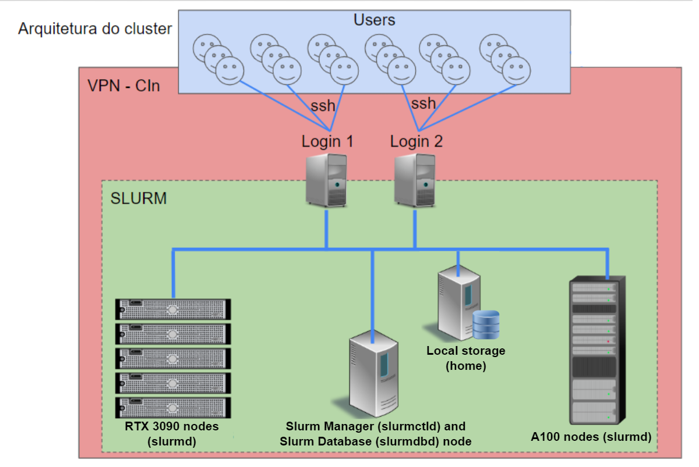

Arquitetura do cluster Apuana¶
Visão geral da arquitetura e acesso¶
Visão geral de funcionamento do cluster¶

- Login Nodes
slurm-client[1-2] slurm (srun, salloc, sbatch)
- Management
slurm-manager[1-2] slurmctld slurmdbdb
- Compute Nodes
cluster-node[1-5] slurmd
- Storage:
$SLURM_TMPDIR
- Parallel Storage
slurmdbdb database
Storage (baseado no MILA)
$HOME
$DATASETS
$SCRATCH
$PROJECTS
$ARCHIVE
Política de Alocação de Recursos¶
- Cota destinada aos pesquisadores (geralmente professores do CIn)
Pesquisadores definem os membros do grupo de pesquisa
Todos em um grupo de pesquisa usam a cota do pesquisador
A cota destinada para cada pesquisador depende da quantidade de recursos que ele investiu no cluster
Uma cota mínima será fornecida a todos os professores do CIn e aos pesquisadores participantes do Projeto Hiper.
Política de Uso¶
- Fila de jobs:
Cada usuário submete um job ao SLURM
Na submissão do job, o usuário especifica os recursos que precisa (GPUs, CPUs, RAM)
Quanto mais recursos ele solicitar, menor a prioridade
Usuários com mais cota possuem maior prioridade
- Categorias de tempo execução:
Jobs de longa duração (ex.: 7 dias sem ser finalizadoe e usando poucos recursos)
Jobs de média duração (ex.: 1 dia sem ser finalizado e usando uma quantidade média de recursos)
Jobs de curta duração (ex.: 2 horas sem sofrer interrupção usando maior quantidade de recursos)
- Preempção:
Após um certo tempo mínimo de execução, um job pode sofrer interrupção para dar espaço a outros jobs (em situações de sobrecarga)
Ao sofrer interrupção, o job volta para a fila de espera e será retomado quando houver recursos para ele
O usuário é responsável por implementar o salvamento e carregamento do estado do seu job (checkpointing)
Pontos Importantes Sobre a Segurança¶
Acesso externo indevido
- Privacidade de dados
Datasets públicos (preferencialmente compartilhados)
Datasets privados (compartilhados entre os membros de um grupo de pesquisa)
- Uso indevido de recursos
Computação/armazenamento fora da cota de uso
Mineração de criptomoedas (dentro ou fora da cota)